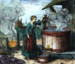
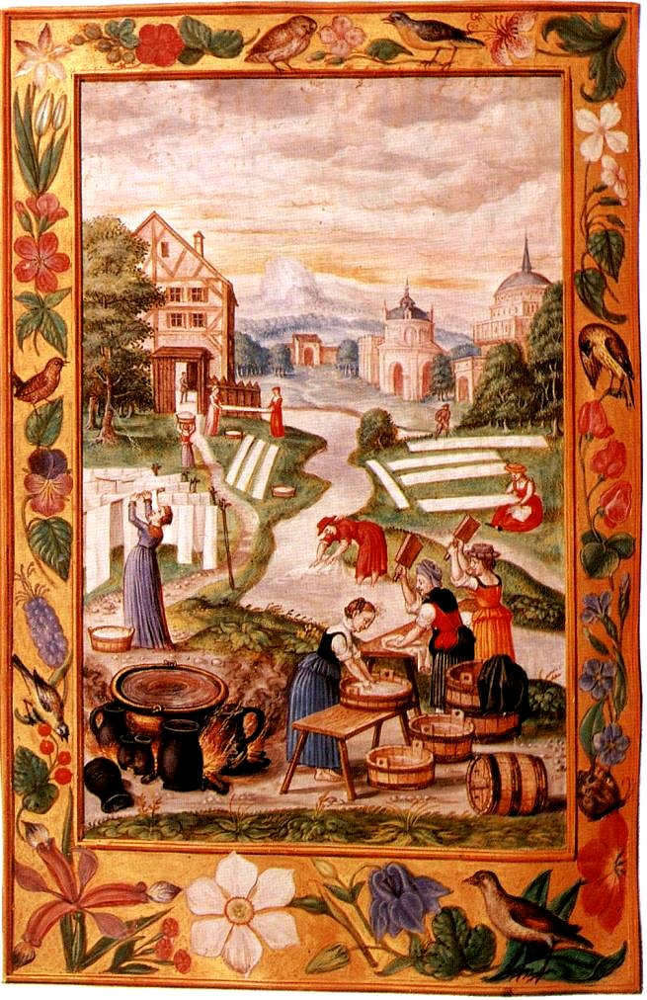
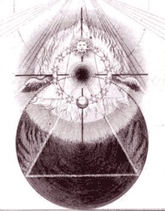
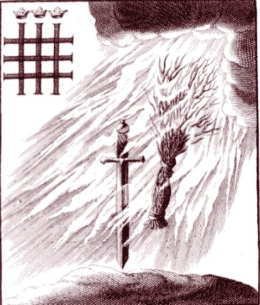

<!DOCTYPE html PUBLIC "-//w3c//dtd html 4.0 transitional//en">
<html lang="fr-fr"><head><meta charset="utf-8">
   
   <meta name="Author" content="Hervé Delboy">
   <meta name="GENERATOR" content="Mozilla/4.76 [en] (Win98; U) [Netscape]">
   <title>Atalanta fugiens Maier III</title>
<link rel="stylesheet" href="../barre.css"><script src="../barre.js" defer></script></head>
<body background="papier.JPG"><div class="replica-note"><a href="../index.html">Hervé Delboy — alchimie</a> · <a href="../sommaire.html">Sommaire</a> · <a href="../recherche.html">Recherche</a> · <a href="../notice.html">Notice</a></div>

<blockquote>
<blockquote>
<center><a  name="Emblema III."></a><b><font face="Verdana"><font color="#660000"><a href="../original/atalanta-fugiens.html">Emblema</a>
III.</font></font></b>
<p><a href="../original/atalante-ii.html"></a><a href="#" title="lien mort dans l'archive"></a></p></center>

<p>
<br><i><font size="-1">revu le 4 mai 2012</font></i>
</p><center>
<hr width="100%">
<p><font face="Verdana"><font color="#660000">Vade ad mulierem lavantem
pannos, tu fac similiter.</font></font>
</p><p><font face="Verdana"><font color="#660000">(Va trouver la femme qui
lave du linge ; toi, fais comme elle.)</font></font>
<br>&nbsp;
</p><p><a href="#" title="lien mort dans l'archive"></a>
<br>&nbsp;
</p><p><b><font face="Verdana"><font color="#660000">Epigramma III.</font></font></b>
</p><p><font face="Verdana"><font color="#660000">Toi qui aimes scruter les
vérités cachées</font></font>
</p><p><font face="Verdana"><font color="#660000">Sache de cet exemple extraire
tout l utile :</font></font>
</p><p><font face="Verdana"><font color="#660000">Vois cette femme, comme elle
purge son linge</font></font>
</p><p><font face="Verdana"><font color="#660000">Des taches, en jetant dessus
de chaudes eaux.</font></font>
</p><p><font face="Verdana"><font color="#660000">Imite-la : ton art ne te
trahira point.</font></font>
</p><p><font face="Verdana"><font color="#660000">L onde lave en effet l ordure
du corps noir.<a  name="1_t"></a><sup><a href="#1">1</a></sup></font></font>
<br>
</p><hr width="100%"><b><font face="Verdana"><a href="../original/fuga-1-4.html#embl%C3%A8me%20III">FUGA
III</a></font></b>
<hr width="100%">
<br><a  name="DISCOURS III."></a><b><font face="Verdana"><font color="#660000">DISCOURS
III.</font></font></b></center>

<p><font face="Verdana"><font color="#660000">Lorsque les étoffes
de lin<a  name="2_t"></a><sup><a href="#2">2</a></sup> reçoivent
des souillures qui les tachent et les noircissent, comme il s agit d ordures
faites de terre, on les enlève à l aide de l élément
le plus proche, à savoir, l eau,<a  name="3_t"></a><sup><a href="#3">3</a></sup>
et on expose les étoffes à l air afin que, grâce à
la chaleur du soleil agissant en tant que feu, quatrième élément,
l humidité en soit extraite en même temps que les souillures.<a  name="4_t"></a><sup><a href="#4">4</a></sup>
Si cette opération est répétée fréquemment,
les étoffes qui étaient auparavant sordides et fétides
deviennent pures et purgées de taches. Ceci est l art des femmes,
qu elles ont appris de la nature elle-même. Nous voyons en effet
les os des animaux exposés à l air : ils sont d abord noirs
et sales, mais si la pluie les humecte souvent et s ils sont séchés
à de nombreuses reprises par la chaleur du soleil survenant à
son tour, ils sont ramenés à une extrême blancheur,
comme le note Isaac.<a  name="5_t"></a><sup><a href="#5">5</a></sup> Il
en est de même du sujet philosophique. Toutes les crudités
et les souillures qui ont pu se rencontrer en lui sont purifiées
et détruites, lorsqu on l arrose de ses propres eaux. Ainsi le corps
est ramené à une grande clarté et à une grande
perfection. Car toutes les opérations chymiques, comme calcination,
sublimation, solution, distillation, descension, coagulation, fixation
et toutes les autres, se réduisent à une ablution.<a  name="6_t"></a><sup><a href="#6">6</a></sup></font></font>
</p><p><font face="Verdana"><font color="#660000">En effet, qui lave à
l aide de l eau une chose impure lui procure le même effet que celui
obtenu par tant de modes d opérer. Car c est par le feu, comme le
dit le Jardinier des Philosophes, que les linges du roi Duenech<a  name="7_t"></a><sup><a href="#7">7</a></sup>,
tachés par la sueur, doivent être lavés, et ils doivent
être brûlés par les eaux. On voit par là que
l eau et le feu se sont communiqués mutuellement leurs qualités,
que l espèce du feu philosophique n est pas la même que celle
du feu commun, et qu il faut penser la même chose de l eau.<a  name="8_t"></a><sup><a href="#8">8</a></sup>
Nous avons observé, au sujet de la chaux vive et du feu grégeois,
qu ils s embrasent dans l eau et ne s éteignent nullement, contre
la nature des autres corps inflammables.<a  name="9_t"></a><sup><a href="#9">9</a></sup>
Ainsi l on affirme que le camphre, enflammé préalablement,
brûle dans l eau. Et la pierre gagate (comme l atteste Anselme de
Bood) s éteint plus facilement, lorsqu elle est enflammée,
avec de l huile qu avec de l eau.<a  name="10_t"></a><sup><a href="#10">10</a></sup>
Car l eau ne peut se mélanger avec ce qui est gras, elle cède
au corps igné, à moins qu elle ne le recouvre et ne le submerge
entièrement. Mais ceci ne peut se faire aisément puisque
c est une pierre et que, comme toute huile, elle gagne la partie supérieure
de l eau. Ainsi le naphte, le pétrole et les substances qui leur
ressemblent ne craignent guère les eaux. Certains écrivent,
au sujet des charbons souterrains de Liège, que, lorsqu ils sont
en feu sous la terre, on ne les éteint pas avec de l eau mais en
entassant par-dessus des poussières de terre, comme le cSur. Tacite
raconte d une semblable espèce de feu qu elle ne put être
étouffée avec de l eau, mais seulement avec des bâtons
et des vêtements ôtés du corps. Il existe donc une grande
diversité de feux, en ce qui concerne la manière de l allumer
et de l éteindre.<a  name="11_t"></a><sup><a href="#11">11</a></sup>
La diversité n est pas moindre dans le domaine des liquides, car
le lait, le vinaigre, l eau-forte, l eau régale et l eau commune
diffèrent grandement entre elles, dans leur comportement à
l égard du feu. Il y a plus : la matière elle-même
supporte le feu, comme ces fameuses étoffes de fin lin tenues dans
l antiquité pour précieuses et utilisées par les riches,
qu on lavait avec le feu et non avec l eau ; en d autres termes, on les
ramenait à leur pureté antérieure, ayant brûlé
les souillures.<a  name="12_t"></a><sup><a href="#12">12</a></sup> Il ne
faut pas ajouter foi aux contes fantaisistes sur les poils du reptile nommé
Salamandre,<a  name="13_t"></a><sup><a href="#13">13</a></sup> contes suivant
lesquels on en ferait des lampes. Certains donnent pour vrai qu une trame
de tissu avait été réalisée à l aide
de talc, d alun de plume et d autres matières de ce genre, et qu on
la nettoyait avec le feu.<a  name="14_t"></a><sup><a href="#14">14</a></sup>
Mais celle qui possédait cette recette (une femme d Anvers) l aurait
fait disparaître avec elle, par envie, et la juste proportion n en
aurait jamais été retrouvée. Nous ne parlons pas ici
des matières combustibles. Le sujet philosophique devra être
considéré selon toutes ces différences, si l on vient
à le préparer. Car le feu, l eau et la matière elle-même
ne seraient pas alors les éléments communs. Pour les philosophes,
en effet, le feu est eau et l eau est feu. Et les étoffes à
laver ont la nature du fin lin ou du talc préparé, dont la
juste proportion et le procédé de préparation ne sont
pas non plus évidents pour tous.<a  name="15_t"></a><sup><a href="#15">15</a></sup>
Pour les laver, ils font une lessive non avec des cendres de chênes
ou leur sel, mais avec le sel métallique, qui est plus durable que
tous les autres, non avec l eau commune, mais avec celle qui, sous le signe
du Verseau, a été congelée en glace et en neiges,
et qui est faite assurément de parties plus ténues que les
eaux stagnantes<a  name="16_t"></a><sup><a href="#16">16</a></sup> ou fangeuses
des mares, de manière à pouvoir pénétrer davantage
à l intérieur du corps philosophique, noir et immonde, pour
le laver et le purger.</font></font>
</p><hr width="100%">
<br><a  name="Notes"></a><b><font face="Verdana"><font color="#660000">Notes</font></font></b>
<p><a  name="1"></a><font face="Verdana"><font color="#660000"><a href="#1_t">1</a>.
Premier point d'achoppement de l'alchimie dans sa forme opératique
: les « <i><u><font size="-1">laveures</font></u></i> » de Flamel.
Il y a deux époques de l'oeuvre où l'on peut pratiquer des
lavages ou des « <i><u><font size="-1">purifications</font></u></i>
». D'abord, dans la préparation des éléments
du Mercure. Mais il s'agit alors de lavages vulgaires, qui n'ont rien de
philosophique. Nous en avons parlé dans différentes sections
: voir <font size="-1"><a href="../original/salpetre.html">salpêtre</a></font> -
<font size="-1"><a href="../original/carbon-potasse.html">carbonates</a></font>
- <font size="-1"><a href="../original/compendium.html">compendium</a></font> où
tous les points de détail sont exposés. Contentons-nous ici
de dire que l'on arrive à purifier correctement le nitre qu'à
la troisième réitération d'une même technique.
Ensuite, les alchimistes ont coutume de dire qu'ils lavent avec du feu
aqueux ou une eau ignée. Mais cette phase se rapporte à la
Grande coction opérée par la voie sèche. Il s'agit
du régime de Saturne où les éléments entrent
en totale dissolution.</font></font>
<br><a  name="2"></a><font face="Verdana"><font color="#660000"><a href="#2_t">2</a>.
Le lin doit subir plusieurs opérations avant qu'il puisse recevoir
la teinture. Il en est de même pour la Pierre. La première
opération s'apparente au rouissage. On dispose l'écorce de
la plante à être séparée pour servir ensuite
à la filature ; comprenez qu'il faut d'abord désosser le
Corps avant de lui infuser le principe tingeant. A cela près, l'analogie
est totale. Tout comme pour le lin, il paraît que dans le rouissage,
un suc glutineux tient en dissolution la partie colorante verte de la plante.
Ce suc doit subir une putréfaction plus ou moins avancée
selon la méthode que l'on emploie.</font></font>
</p><center>
<p>
<br><b><font size="-1">FIGURE I</font></b>
<br><b><i><font size="-1">(planche XX du <a href="../original/toyson.html">Splendor Solis</a>
- laveures ignées)</font></i></b></p></center>

<p><a  name="3"></a><font face="Verdana"><font color="#660000"><a href="#3_t">3</a>.
L'expérience montre que l'eau, employée seule, est insuffisante
pour séparer complètement le suc de la partie corticale du
lin. Tout comme pour la Pierre, on propose de mêler une petite quantité
d'alkali caustique dans l'eau de lavage, afin d'augmenter la force dissolvante.
Un phénomène comparable à la phase de putréfaction
s'opère puisque l'on observe que les parties colorantes vertes passent
au jaune, au fauve, et même au brun ; on remarque que, dans le même
temps, une grande partie de la dissolution est soluble dans les alkalis.
De façon plus générale, on doit prescrire dans cette
opération une dissolution de deux parties d'alkali [</font><font color="#000099"><font size="-1">végétal
ou minéral</font></font><font color="#660000">] contre une partie
de chaux, de tenir le tout en digestion puis d'exercer les laveures ignées.</font></font>
<br><a  name="4"></a><font face="Verdana"><font color="#660000"><a href="#4_t">4</a>.
Maier veut ici parler de corps astringents, c'est-à-dire de substances
qui changent en noir une dissolution de fer. Les alchimistes, Fulcanelli
en particulier, citent la noix de galle comme exemple princeps. La noix
de galle est une excroissance qu'on trouve sur les jeunes branches du chêne,
principalement de l'espèce qu'on appelle rouvre [</font><font color="#000099"><font size="-1">arbre
dédié à Jupiter</font></font><font color="#660000">].
Ceci nous ramène au problème des couleurs. Sont-elles perçues
par le sens, sont-elles perçues par l'entendement ? Fulcanelli,
Tollius et Nicolas Flamel penchent pour la deuxième hypothèse.
Quoi qu'il en soit, seule l'expérience au matras par la voie humide
pourrait montrer des couleurs. Il semble que Newton, lorsqu'il menait à
bien ses expériences, ait mis en évidence des irisations.
B.J. Dobbs [</font><font color="#000099"><font size="-1"><i>Les fondements
de l'alchimie de Newton</i>, Guy Trédaniel, 1981</font></font><font color="#660000">]
pense qu'il pouvait s'agir de composés semi-métalliques.</font></font>
<br><a  name="5"></a><font face="Verdana"><font color="#660000">5. Jean
Isaac et Isaac dits les <a href="../original/traite-sel.html">Hollandais</a>. Les ouvrages
qui portent le nom d'Isaac le Hollandais, très estimés de
<a href="../original/chevreul-hoefer-2.html">Boyle</a>
et Kunckel, renferment la description d'un très grand nombre de
procédés de chimie, qui, bien que dirigés d'après
des vues alchimiques, sont restés dans la science comme la suite
des travaux de Geber. Il paraît que Isaac le Hollandais a été
un habile fabricant d'émaux et de pierres gemmes artificielles et
il a décrit sans arrière pensée ses procédés
pour la préparation de ces produits artificiels.</font></font>
<br><font face="Verdana"><font color="#660000">Isaac le Hollandais a écrit
</font><i><font color="#000099"><font size="-1">L'Oeuvre
de Saturne, Des choses Naturelles et Supernaturelles</font></font></i><font color="#660000">,
Londres, 1670. L'histoire ne fournit aucun renseignement sur Isaac le Hollandais
père et J. Isaac fils, deux célèbres alchimistes du
XVe siècle [</font><font color="#000099"><font size="-1">Hoefer assure
que T. Bergmann se trompe en plaçant ces auteurs au début
du XVII<sup>e</sup> siècle, car les écrits d'Isaac le Hollandais
étaient déjà alors très répandus</font></font><font color="#660000">].
Ces alchimistes hollandais connaissaient l'eau régale préparée
au moyen du salpêtre et du sel marin, l'esprit d'urine [</font><font color="#000099"><font size="-1">ammoniaque</font></font><font color="#660000">]
et les pierres précieuses artificielles. Ils attribuent à
la pierre philosophale la propriété de multiplier les métaux
et de rajeunir les corps. Le nombre de leurs écrits est assez grand.
Hoefer [</font><font color="#000099"><font size="-1"><i>Histoire de la Chimie</i>,
2<sup>ème</sup> époque</font></font><font color="#660000">]
cite le </font><i><font color="#000099"><font size="-1">Tractatus de urina</font></font></i><font color="#660000">
[</font><i><font color="#000099"><font size="-1">Theat. chem., VI</font></font></i><font color="#660000">].
La principale opération décrite par l'auteur consiste à
distiller l'urine, à calciner le résidu pendant trois heures,
à le reprendre par l'eau, à l'évaporer en partie,
et à le laisser refroidir.</font></font>
</p><p><i><font face="Verdana"><font color="#000099"><font size="-1">"On obtient
ainsi un sel cristallisé qu'il faut purifier par des cristallisations
répétées. C'est avec ce sel d'urine (sel de phosphore)
que l'on peut souder les métaux."</font></font></font></i>
</p><p><font face="Verdana"><font color="#660000">Il prépare une espèce
d'éther en soumettant à la distillation un mélange
fait avec 4 parties de vinaigre distillé, 3 parties d'eau-de-vie,
et 0.5 partie de chaux vive.</font></font>
</p><p><i><font face="Verdana"><font color="#000099"><font size="-1">"Vous aurez
ainsi une substance admirable qui réduit les chaux des métaux
en leur matière première."</font></font></font></i>
</p><p><font face="Verdana"><font color="#660000">Il est de fait que l'alcool,
les différents éthers réduisent ainsi les sels d'or
[</font><font color="#000099"><font size="-1">voir section <a href="../original/etain.html">voie
humide</a></font></font><font color="#660000">]. Hoefer cite un autre traité,
le </font><i><font color="#000099"><font size="-1">De Lapide philosophorum</font></font></i><font color="#660000">
[</font><i><font color="#000099"><font size="-1">Theat. chem., II</font></font></i><font color="#660000">]
où Isaac reproche aux anciens chimistes de ne pas avoir connu les
eaux-fortes pour attaquer les métaux. D'après la théorie
de cet alchimistes, chacun des métaux renferme dans son intérieur
le principe de la teinture d'or ou de la teinture d'argent ; et lorsqu'on
y projette la pierre ou l'élixir philosophal, ce principe se porte
à la surface du métal, et le teint en jaune ou en blanc.
Les autres ouvrages attribués à J. le Hollandais sont : </font><font color="#000099"><font size="-1"><i>Opera
vegetabilia [Arnheim, 1617] - Opera minralia </i>[Middelb., 1600]<i> -
Ratiores chemiae operationes</i> [Leipz., 1714]<i> - Opus Saturni </i>[Nuremb.,
1670] <i>- De triplici ordine elixiris et lapidis theoria </i>[imprimé
avec le Traité de Bernh. Penot - Denarium medicum - ; Bern., 1608]<i>
- Tractatus de salibus et oleis metallorum </i>[imprimé avec la
Chimie de Stahl ; Nuremb., 1723]</font></font><font color="#660000"> et
beaucoup d'autres traités indiqués par Borel. La plupart
de ces ouvrages, d'après Hoefer, présentent des traits de
ressemblance avec ceux de Basile Valentin et il y a quelque raison de croire
qu'ils seraient donc de la même plume.</font></font>
<br><a  name="6"></a><font face="Verdana"><font color="#660000"><a href="#6_t">6</a>.
voir les <i><font size="-1"><a href="../original/ripley.html">Douze Portes</a></font></i>
de Ripley, où chaque processus est analysé, en particulier,
celui, si proche des vues de Jung, sur la Projection.</font></font>
</p><center>
<p>
<br><b><font size="-1">FIGURE II</font></b>
<br><b><i><font size="-1">(Jacob Bôhme, Theosophische Wercken, 1682
: le laiton hermétique)</font></i></b><br><br>
</p></center>

<p><a  name="7"></a><font face="Verdana"><font color="#660000"><a href="#7_t">7</a>.
l'un des noms donnés au vitriol. Pernety a rédigé toute
une liste des noms sous lesquels est connu le laiton ou Rebis dans son
premier état :</font></font>
</p><p><i><font face="Verdana"><font size="-1"><font color="#000099">"Nom que
quelques Chymistes Hermétiques ont donné à leur matière
au noir, qu ils appellent encore le <u>Laiton</u> qu il faut blanchir.
On le nomme aussi <u>Duenech vert</u> ou <u>Antimoine</u>." [</font><font color="#660000">Dictionnaire</font><font color="#000099">]</font></font></font></i>
</p><p><font face="Verdana">On peut en rapprocher le mot <u>Zandarith</u> dont
Pernety nous dit qu'il s'agit d'une moyenne substance qui participe du
corps et de l'esprit, c'est-à-dire, du volatil et du fixe. <font size="-1"><a href="../original/liber-artephius.html#corjufle">Artéphius</a></font>
l'explique du magistère au blanc, et dit que c'est la même
chose que <u>Corsufle</u> et <u>Cambar</u>. On a essayé d'en donner
une explication au <i><font color="#000099"><font size="-1">Livre secret</font></font></i>
d'Artéphius.</font>
De tout ce que les Artistes ont écrit sur Duenech, on peut conclure
qu'il s'agit d'un des états du Mercure philosophique appelé vitriol
vert sans que, pour autant, il soit assuré qu'il s'agisse du Lion vert.
On reverra ici les nombreuses dénominations de cette partie de
l'oeuvre, au vrai peut-être la plus délicate à conceptualiser, telles
qu'elles apparaissent dans le traité du pseudo Flamel : <small style="font-style: italic;"><span style="font-weight: bold;">Explication des figures hiéroglyphiques</span></small>, note <a href="../original/fig-hier.html#123_t">123</a>. Berthelot évoque à plusieurs reprises le sel duenech dans la <small><span style="font-weight: bold; font-style: italic;">Chimie au Moyen Âge</span></small> [<small style="color: rgb(0, 0, 153);">tome 1, pp. 82, 193, 199, 207, 208, 217, Paris, 1893</small>] : <span style="text-decoration: underline;">duenez</span> ou vitriol ; <span style="text-decoration: underline;">dueneg</span> : id est vitreolum [<small style="color: rgb(0, 0, 153);"><span style="font-weight: bold;">Liber sacerdotum</span>, recette 27 à propos de la préparation du Lait de vierge - recette 60 sur la préparation de la Rubrica - recette 104 : « <span style="font-style: italic;">Sed et magnesie dueneg viride que in mineria nascitur eris...</span> » - recette 108 : « <span style="font-style: italic;">Dueneg autem principio virorem, denum atturici (?) lapidis colorem inducit natura... </span>» - recette 125 : alius decorum. Rubrica - recette 158 : « Dueneg, id est vitreolum... »</small>] ; notons enfin que R. Halleux [<small style="color: rgb(0, 0, 153);"><span style="font-weight: bold;">Alchimistes grecs</span> p. 84, X, Belles Lettres, 2000</small>] assimile <span style="text-decoration: underline;">duenech</span> à la malachite [<small style="color: rgb(0, 0, 153);">sur la malachite, cf. mon <a href="../original/fontenay.html">Fontenay-Le-Comte</a></small>]. On l'utilise en peinture sous l'appellation de <small><span style="font-style: italic;">vert des montagnes</span></small> [<small style="color: rgb(0, 0, 153);">il s'agit du vert-de-gris naturel</small>]. Il en existe une autre variété qui porte le nom de <small><span style="font-style: italic;">bleu de montagne</span></small> ou <small><span style="font-style: italic;">azur de cuivre</span></small>. Cette variété, disséminé dans des pierres calcaires, se nomme encore <small><span style="font-style: italic;">pierre d'Arménie</span></small>. <br></p><p><a  name="8"><br></a><font face="Verdana"><a href="#8_t">8</a>. Les alchimistes
ont toujours affirmé que leur dissolvant, appelé aussi feu
secret, était une eau ignée ou un feu aqueux et qu'il renfermait
sa ponticité dans son état plus que dans sa forme et que,
selon la température, on lui donnait tantôt l'épithète
de Mercure, tantôt l'épithète de Soufre. Ils ont dit
aussi que ce dissolvant tenait de l'alkali fixe, de la nature de la chaux
et de celle de l'eau forte, sans que pour autant il s'agisse d'un agent,
mais bien plutôt d'un moyen ou plus exactement d'un milieu. Voyez la section
<font size="-1"><a href="../original/imitat-prec.html">Mercure</a></font>.</font>
<br><a  name="9"></a><font face="Verdana"><a href="#9_t">9</a>. Marcellin
Berthelot a démontré [<font color="#000099"><font size="-1"><i>les
compositions incendiaires dans l'antiquité et au Moyen Âge</i>,
Revue des Deux Mondes, t. 106, 1891, p. 787</font></font>] que le secret
de la préparation du feu grec ou grégeois consistait dans
l'addition du nitre aux mélanges incendiaires connus. Lippmann,
dans une étude concernant l'histoire de la poudre, pense que les
principaux constituants du feu grégeois étaient des espèces
de pétrole, ou de solutions de goudron, de résine, de poix,
etc. dans le pétrole mélangées avec de la chaux vive.
Lippmann pense que le nitre était inconnu des Byzantins, mais on
trouve dans Pline le passage suivant :</font>
</p><p><i><font face="Verdana"><font color="#000099"><font size="-1">"Une espèce
de nitron se trouve comme une <u>efflorescence</u> sur les murs humides
; elle a plusieurs applications à la médecine et c'est un
<u>engrais</u>
efficace et fertilisant."</font></font></font></i>
</p><p><font face="Verdana"><font color="#660000">En dehors du feu grégeois,
il faut rapporter la chaux dont le comportement à l'eau est bien
connu et les pyrophores de Homberg et de Gay-Lussac qui sont des mélanges
de matière charbonneuse et de sulfure de potassium qui ont la propriété
de s'enflammer à l'air humide [</font><font color="#000099"><font size="-1">cf.
section <a href="../original/fontenay.html">Fontenay</a></font></font><font color="#660000">]</font></font>
</p><center>
<p>
<br><a  name="FIGURE III"></a><b><font size="-1">FIGURE III</font></b>
<br><b><i><font size="-1">(Jacob Bôhme, Theosophische Wercken, 1682
: le feu secret)</font></i></b><br><br>
</p></center>

<p><a  name="10"></a><font color="#660000"><font face="Verdana"><a href="#10_t">10</a>.
La pierre gagate, <small><span style="font-style: italic;">gagataes</span></small>, est une pierre noire qui correspond au jais.
En grec, </font><font face="Symbol"><font size="+1">gagathV</font></font><font face="Verdana">,
c'est la pierre de Gagas, fleuve de Lycie, pierre dure et noire. Un poète
de la Pléïade, Remy Belleau s'en est inspiré dans ses</font></font><font face="Verdana"><font color="#000099"><i><font size="-1">Amours
et nouveaux eschanges des pierres précieuses</font></i> [</font><font color="#660000"><font size="-1">vertus
et proprietez d'icelles ; Discours de la vanité, pris de l'Ecclesiaste
; Eclogues sacrees, prises du Cantique des Cantiques, Patisson, 1576</font></font><font color="#000099">].
Nous avons respecté l'orthographe originale :</font></font>
</p><center>
<p><b><font face="Verdana"><font color="#000099">La&nbsp;<a  name="Gagate"></a>Gagate</font></font></b>
</p><p><i><font face="Verdana"><font color="#000099">C'est trop vanté
les honeurs de l'Agathe,</font></font></i>
<br><i><font face="Verdana"><font color="#000099">Ie veux chanter maintenant
la Gagate,</font></font></i>
<br><i><font face="Verdana"><font color="#000099">De fon odeur qui chaffe
le ferpent,</font></font></i>
<br><i><font face="Verdana"><font color="#000099">Deffus le ventre &amp;
gliffant &amp; rampant</font></font></i>
<br><i><font face="Verdana"><font color="#000099">Pli deffus pli de fon
alleure torte</font></font></i>
<br><i><font face="Verdana"><font color="#000099">A dos courbé,
voguant de mefme forte</font></font></i>
<br><i><font face="Verdana"><font color="#000099">Qu'vne galere, ou comme
on voit en mer</font></font></i>
<br><i><font face="Verdana"><font color="#000099">Flot deffus flot les
ondes s'animer,</font></font></i>
<br><i><font face="Verdana"><font color="#000099">Frifant, crefpant d'vne
ondoyante fuite</font></font></i>
<br><i><font face="Verdana"><font color="#000099">Deffus les bords leur
efcume defpite.</font></font></i>
<br><i><font face="Verdana"><font color="#000099">Donc cefie pierre a fi
mauuaife odeur,</font></font></i>
<br><i><font face="Verdana"><font color="#000099">Que les poulmons iures
de fa vapeur,</font></font></i>
<br><i><font face="Verdana"><font color="#000099">Par les nafeaux ayant
prife &amp; humee</font></font></i>
<br><i><font face="Verdana"><font color="#000099">Cefte fafcheufe &amp;
puante fumee,</font></font></i>
<br><i><font face="Verdana"><font color="#000099">Perdent le vent, &amp;
bouchent les efprits</font></font></i>
<br><i><font face="Verdana"><font color="#000099">De cefte odeur eftouffez
&amp; furpris.</font></font></i>
<br><i><font face="Verdana"><font color="#000099">Doncques premier que
vanter cefte pierre,</font></font></i>
<br><i><font face="Verdana"><font color="#000099">Et la fenteur qu'en fes
flancs elle enferre,</font></font></i>
<br><i><font face="Verdana"><font color="#000099">Ma chere Mufe, arrofe
de ton eau</font></font></i>
<br><i><font face="Verdana"><font color="#000099">L'ancre facré,
&amp; les vers de Belleau</font></font></i>
<br><i><font face="Verdana"><font color="#000099">Arrofe-luy les tempes
&amp; la face</font></font></i>
<br><i><font face="Verdana"><font color="#000099">Du doux parfum qui coule
de ta grace.</font></font></i>
<br><i><font face="Verdana"><font color="#000099">Or la Gagate eft de noire
couleur,</font></font></i>
<br><i><font face="Verdana"><font color="#000099">Tendre, fragile, &amp;
prefque de l'odeur</font></font></i>
<br><i><font face="Verdana"><font color="#000099">Du foufre vif, &amp;
de forte teinture,</font></font></i>
<br><i><font face="Verdana"><font color="#000099">De poids legere, &amp;
d'eftrange nature.</font></font></i>
<br><i><font face="Verdana"><font color="#000099">Car dedans l'eau auffi
foudain prend feu,</font></font></i>
<br><i><font face="Verdana"><font color="#000099">Et dedans huile elle
meurt peu à peu.</font></font></i>
<br><i><font face="Verdana"><font color="#000099">Recuite en vin elle eft
fort fouueraine</font></font></i>
<br><i><font face="Verdana"><font color="#000099">Au mal des dents : de
fa puante haleine</font></font></i>
<br><i><font face="Verdana"><font color="#000099">Elle prouoque &amp; fait
couler les fleurs,</font></font></i>
<br><i><font face="Verdana"><font color="#000099">Sans fe purger qui font
mille douleurs.</font></font></i>
<br><i><font face="Verdana"><font color="#000099">Mife en onguent aucc
cire nouuelle,</font></font></i>
<br><i><font face="Verdana"><font color="#000099">Elle guarit &amp; purge
l'efcroüelle.</font></font></i>
<br><i><font face="Verdana"><font color="#000099">S'il doit efcheoir ce
qu'on defire auoir,</font></font></i>
<br><i><font face="Verdana"><font color="#000099">On dit pour vray qu'elle
ne peut ardoir.</font></font></i>
<br><i><font face="Verdana"><font color="#000099">Bonne eft l'odeur pour
le mal de la mere,</font></font></i>
<br><i><font face="Verdana"><font color="#000099">Bonne à fçauoir
fi la vierge eft entiere,</font></font></i>
<br><i><font face="Verdana"><font color="#000099">Bonne à iuger
l'homme melancolic</font></font></i>
<br><i><font face="Verdana"><font color="#000099">Et defcouurir le cerueau
lunatic.</font></font></i>
<br><i><font face="Verdana"><font color="#000099">Elle se trouue au Lycien
riuage</font></font></i>
<br><i><font face="Verdana"><font color="#000099">Et dans les eaux du grand
fleuue de Gage,</font></font></i>
<br><i><font face="Verdana"><font color="#000099">Dont elle emprunte &amp;
la gloire &amp; le nom.</font></font></i>
<br><i><font face="Verdana"><font color="#000099">Et les vertus d'vn immortel
renom.</font></font></i></p></center>

<p><font face="Verdana"><font color="#660000">Evidemment, nous dira-t-on,
que vient faire cette tirade sur la gagate, ou si l'on préfère,
sur la lignite ? Ceci. Une note des </font><i><font color="#000099"><font size="-1">C.R.
de l'Académie des sciences</font></font></i><font color="#660000">
met en exergue le point suivant :</font></font>
<br>&nbsp;
</p><blockquote><font face="Verdana"><font color="#000099"><font size="-1">Dans
un moellon de grès bigarré, tendre, appartenant à
un bloc brisé de la partie supérieure d'une carrière,
j'ai trouvé du lignite ayant appartenu à un arbre dicotylédon
; cette branche offre des marques certaines d'écorce, de branches,
de noeuds, etc. ; le bois était à demi pourri avant de se
pétrifier; jusque-là rien que de très-commun : mais
ce moellon était traversé de part en part par un filon de
sulfate de baryte d'une épaisseur moyenne de 4 millimètres,
lequel coupait transversalement la branche en question , et cela sans solution
de continuité; de plus dans l'épaisseur d'une autre branche
voisine, il s'est formé des rognons de la même substance (sulfate
de baryte cristallisé). Or voici les inductions que j'en ai tirées</font></font></font>
<p><font face="Verdana"><font color="#000099"><font size="-1">1° lorsque
les grès bigarrés se sont formés, les arbres dicotylédons
existaient ;</font></font></font>
<br><font face="Verdana"><font color="#000099"><font size="-1">2° ces
grès sont formés d'un sable fin qui s'est solidifié
après avoir été déposé ;</font></font></font>
<br><font face="Verdana"><font color="#000099"><font size="-1">3° il
y avait dans ces sables du sulfate de baryte ;</font></font></font>
<br><font face="Verdana"><font color="#000099"><font size="-1">4° ce
sulfate s'est aggloméré par une action galvanique; car de
deux choses l'une: ou le filon existait lors de l'emprisonnement de la
branche, alors il devait être pâteux, sans cela il eût
été impénétrable à cette branche : mais
dans ce cas il devait y avoir solution de continuité dans le corps
de la branche ; ou bien il n'existait point encore, alors il faut admettre
que les roches sédimenteuses n'ont cessé de se transformer
depuis que les éléments dont elles sont composées
ont été fixés. [...]</font></font></font>
</p><div align="right"><i><font face="Verdana"><font color="#000099"><font size="-1">Note
de M. Denis</font></font></font></i></div>
</blockquote>
<font face="Verdana"><font color="#660000">Revoyez notre section du Mercure
de nature. Vous verrez que cette observation, au demeurant purement fortuite,
met en évidence une induction nette et évidente entre les
éléments suivants : sable, sulfate de baryte [</font><font color="#000099"><font size="-1">analogue
au sulfate de potasse, c'est-à-dire au tartre vitriolé</font></font><font color="#660000">]
; élément réducteur [</font><font color="#000099"><font size="-1">lignite
= pierre de Gagate</font></font><font color="#660000">] ; action électrique
de « nature ». Voilà des éléments bien
intéressants à mettre en balance avec ce que nous apprennent
les textes. Les alchimistes auraient-ils pratiqué la galvanoplastie
sans le savoir ? La question, à laquelle nous pensons depuis longtemps,
mérite d'être posée. Pour M. Berthelot, il y aurait
deux pierres gagates, l'une correspondant au jais [</font><i><font color="#000099"><font size="-1">Pline,
XXXVI, 34 ; Diosc, Mat. Me. V, 145</font></font></i><font color="#660000">]
et l'autre, dénommée pierre de Memphis [</font><i><font color="#000099"><font size="-1">Diosc,
Mat. Med. , V, 157</font></font></i><font color="#660000">]</font></font>
<br><a  name="11"></a><font face="Verdana"><font color="#660000"><a href="#11_t">11</a>.
Fulcanelli nous parle de lampes perpétuelles dans sa <a href="../original/salamandre-lisieux.html">Salamandre
de Lisieux</a> :</font></font>
<p><i><font face="Verdana"><font size="-1"><font color="#000099">"La Médecine
universelle est devenue la Lumière inextinguible, le produit éclairant
de ces <u>lampes perpétuelles</u>, que certains auteurs ont signalées
comme ayant été trouvées dans quelques sépultures
antiques."</font><font color="#660000"> [DM, I]</font></font></font></i>
</p><p><font face="Verdana"><font color="#660000">D'après Fulcanelli,
ces lampes sont l'une des réalisations les plus surprenantes de
la science hermétique et elles seraient faites d'Elixir liquide
[</font><i><font color="#000099"><font size="-1">DM, II, le grimoire du château
de Dampierre</font></font></i><font color="#660000">]. On trouve dans les
</font><i><font color="#000099"><font size="-1">Lettres
juives ou Correspondance philosophique, historique et critique entre un
juif voyageur et ses correspondans en divers endroits</font></font></i><font color="#660000">,
le Marquis d'Argens, un passage sur les lampes perpétuelles où
l'auteur montre que Descartes avait étudié le sujet. M. Berthelot
[</font><i><font color="#000099"><font size="-1">La légende des savants
alexandrins, in Notices relatives à l'histoire des Sciences, T.
XLIX</font></font></i><font color="#660000">] :</font></font>
<br>&nbsp;
</p><blockquote><font face="Verdana"><font color="#000099"><font size="-1">Ces
légendes répondent à des phénomènes
réels, attribuables à la <u>phosphorescence</u>. Le procédé
susceptible de les manifester est décrit amplement dans les écrits
des alchimistes grecs, et il y est donné comme tiré des livres
d'<a href="../original/prima-materia.html">Ostanès</a> et autres magiciens persans
et égyptiens. Il était fondé sur l'emploi des biles
des animaux marins, dont on frottait les objets que l'on voulait rendre
lumineux dans l'obscurité. J'ai publié et commenté
ces textes. Des effets de phosphorescence analogues, mais transitoires,
sont également susceptibles de se produire, au moment où
<u>l'air
et la lumière pénètrent dans un tombeau longtemps
fermé</u>. Ces effets ont dû concourir aux récits de
<u>lampes
perpétuelles</u> trouvées dans les sépulcres. Je rappellerai
que l'un des premiers phénomènes qui aient été
observés parfois lors de l'ouverture des tombes antiques, a été
décrit comme l'affaissement des restes du cadavre et la disparition
presque subite de ses vêtements et ornements. J'ai assisté,
moi-même, lors de l'Exposition universelle de 1867, à Paris,
à une vision de ce genre, au moment du déroulement, par Mariette,
d'une momie qu'il avait apportée d'Égypte. A un certain moment,
apparut sur la poitrine de la momie une plaque d'argent, couverte de caractères
noirs : c'étaient les formules rituelles du Livre des Morts. Mariette
les lut rapidement sous nos yeux; et elles s'évanouirent presque
aussitôt, brûlées par l'action de l'air et de la lumière.
La scène se passant en plein jour, on n'aperçut aucune lueur;
mais les phénomènes de combustion spontanée de cet
ordre sont très souvent accompagnés de phosphorescence. Ils
ont dû être observés plus d'une fois par les violateurs
des tombes égyptiennes et les frapper d'une terreur superstitieuse.
Il est aussi question chez les auteurs anciens de certains mélanges
susceptibles d'étre conservés dans l'obscurité et
qui s'enflammaient au Soleil. Déjà, dans les Trachiniennes
de Sophocle, Déjanire parle d'un philtre (sang de Nessus), destiné
à enflammer la tunique d'Hercule, philtre qui ne doit pas être
exposé aux rayons du Soleil. On serait porté à regarder
ces indications comme purement fabuleuses, si on ne les retrouvait dans
des recettes d'apparence purement scientifique, telles que celles de Julius
Africanus et de Marcus Graecus ; la pyrite (fer sulfuré) et la chaux
vive y figurent. Cependant ces recettes sont trop vagues pour que nous
puissions, avec les seules matières connues des anciens, même
aidés de nos connaissances modernes, en reproduire exactement les
effèts; à moins de recourir à des <u>affusions d'eau</u>,
comme je le dirai tout à l'heure. On y réussit plus aisément
s'ils'agit de mélanges phosphorescents, ou susceptibles de le devenir
sous l'influence de la lumière solaire, mélanges, au contraire,
faciles à composer. Les lueurs phosphorescentes, surtout dans les
récits magiques, étaient confondues autrefois avec celles
d'une combustion active : le mot incendiurn offre réellement ce
double sens dans Marcus Graecus.</font></font></font>
<br><font face="Verdana"><font color="#000099"><font size="-1">Les prêtres
de l'antiquité connaissaient plusieurs procédés pour
allumer un feu véritable, sans recourir à l'emploi de matières
en combustion préalable. Tel est le mélange de la chaux vive
avec le soufre soumis à l'action de l'eau, mélange signalé
d'une façon expresse par Tite-Live, dans un passage relatif à
l'interdiction des Bacchanales, mélange qui resta connu pendant
le Moyen Âge. Telles étaient encore les cendres de couleur
spéciale (mélange de chaux vive et d'encens) employées
dans un temple de Lydie, d'après Pausanias. Le mage invoquait le
dieu par des prières en langage barbare, et le bois placé
sur l'autel s'allumait de lui-même. Il est probable que l'inflammation
était, comme dans le cas des Bacchantes, provoquée par des
<u>affusions
d'eau</u>.</font></font></font></blockquote>

<p><br><font face="Verdana"><font color="#660000">Comme on le voit, rien
n'est inexplicable si l'on a tant soit peu l'esprit critique. Et l'on ne
voit pas ce qui pourrait donner quelque crédit aux assertions de
Fulcanelli.</font></font>
<br><a  name="12"></a><font face="Verdana"><font color="#660000"><a href="#12_t">12</a>.
Voici ce que rapporte M. Berthellot dans sa </font><i><font color="#000099"><font size="-1"><a href="../original/chimie-anciens.html">Chimie
des Anciens</a></font></font></i><font color="#660000"> :</font></font>
</p><blockquote><font face="Verdana"><font color="#000099"><font size="-1">Procédé
pour rendre une étoffe incombustible</font></font></font>
<p><font face="Verdana"><font size="-1"><font color="#000099">Voici un procédé
donné dans le Traité d'orfèvrerie [Collection des
Alchimistes Grecs, VI, I, 40] : « </font><i><font color="#660000">Prends
de la chaux vive, mêle-la avec de l'huile et arrose bien une fois
ou deux. Ajoute aussi de la lessive, en la versant tout autour et au-dessus,
jusqu'à une épaisseur de deux doigts. Mets cette eau divine
dans un flacon. Prends une étoffe de lin, mouille-la dans cette
eau ; expose-la au feu et, si l'étoffe s'enflamme, sache qu'elle
n'est pas bien préparée. Ajoute de nouveau le liniment calcaire
avec d'autre chaux ; opère comme précédemment jusqu'à
réussite, c'est-à-dire jusqu'à ce que l'étoffe
ne s'enflamme pas dans le feu.</font></i><font color="#000099"> »
On trouve dans Aulu-Gelle un passage d'après lequel une tour de
bois destinée à la défense du Pirée, ne put
être incendiée par Sylla, parce qu'elle était enduite
d'alun : « </font><i><font color="#660000">omnem materiam obliverat
alumine, quod Sylla atque milites admirabantur.</font></i><font color="#000099">
» Noctes atticae, XV, 1. [...]</font></font></font></p></blockquote>
<font face="Verdana"><font color="#660000">Il est évident que la
référence à l'alun est, pour nous, des plus précieuses.</font></font>
<br><a  name="13"></a><font face="Verdana"><font color="#660000"><a href="#13_t">13</a>.
Sur la salamandre, voyez la section <font size="-1"><a href="../original/fontenay.html">Fontenay</a></font>.
Sel central restant infusible à la plus haute température
de nos fourneaux, la salamandre est, d'une certaine manière, liée
à la légende de Méduse et de Persée. En effet,
lorsque Persée décapite Méduse, deux sujets apparaissent
: Pégase et Chrysaor. L'une des substances est fixe, l'autre volatile.
Chrysaor [</font></font><font face="Symbol"><font color="#000099"><font size="+1">Crusawr</font></font></font><font face="Verdana"><font color="#660000">],
uni à Callirhoé, fut père de Géryon. Voyez
le <font size="-1"><a href="../original/fontenay.html#X">X<sup>ème</sup> travail</a></font>
d'Hercule à ce sujet.</font></font>
<br><a  name="14"></a><font face="Verdana"><font color="#660000"><a href="#14_t">14</a>.
Le talc et l'alun de plume sont des substances qui nous sont bien familières.
Dans la note précédente, nous avons dit que Méduse,
décapitée, libère deux sujets. Voyez ce qui se passe
quand on calcine de l'alun de plume, c'est-à-dire de l'alun déphlegmé
: le sel se boursoufle et si on le chauffe à la chaleur rouge, il
se sépare en deux : d'un côté, la terre Cimolienne
et de l'autre, l'alkali végétal. Quant au talc, ce nom a
été donné à des minéraux d'un vert ordinairement
clair, quelquefois aussi très foncé, doux au toucher, peu
durs, infusibles et composées de silicate de magnésie. Schiste
et talc font bon ménage : la paragonite est un schiste qui a été
analysé par Vauquelin : il contient les staurotides de Bretagne.
Ces staurotides sont déjà un pas important dans la recherche
du <font size="-1"><a href="../original/merc-nat.html">Mercure de nature</a></font> [</font><font color="#000099"><font size="-1">cf.
section</font></font><font color="#660000">]. C'est dans le schiste du
Saint-Gothard que l'on trouve des cristaux à staurotide et on y
trouve aussi des cristaux d'amphibole verte très allongés.
Nous avons dit ailleurs que le talc est appelé étoile de
la terre, à cause qu'il éclate comme les étoiles et
qu'il possède un éclat argentin. Quelques-uns ont cru qu'il
s'agissait de l'argyrodamas des Anciens, parce qu'il résiste aux
injures et aux traits du feu [</font></font><font color="#000099"><font face="Symbol"><font size="+1">arghV</font></font><font face="Verdana"><font size="-1">
: éclatant de blancheur, en parlant des terrains calcaires et crayeux</font></font></font><font face="Verdana"><font color="#660000">].
Il y a deux préparations que l'on fait à partir du talc :
l'une, blanche, dont on se sert comme fard, et l'autre, rouge, que l'on
prépare à partir de talc rouge et d'esprit de vin tartarisé.</font></font>
<br><a  name="15"></a><font face="Verdana"><font color="#660000"><a href="#15_t">15</a>.
Voyez le texte d'<i><font size="-1"><a href="../original/huginus.html#talc">Huginus à
Barma</a></font></i>, où nous indiquons comment obtenir du talc
préparé. Pour résumer, l'Artiste aura besoin, outre
de talc de Venise, de sel de tartre, de salpêtre et d'esprit de vin.</font></font>
<br><a  name="16"></a><font face="Verdana"><font color="#660000"><a href="#16_t">16</a>.
renvoie par cabale à l'étain [</font><font color="#000099"><font size="-1">stannum</font></font><font color="#660000">]
ou à la stibine [</font><font color="#000099"><font size="-1">stibium</font></font><font color="#660000">].
Ces substances n'ont d'utilité que dans la voie humide [</font><font color="#000099"><font size="-1">préparation
du <a href="../original/etain.html">pourpre de Cassius</a> et des strass colorés</font></font><font color="#660000">].
Cette explication peut être complétée : en grec, stagnant
[</font></font><font face="Symbol"><font color="#000099"><font size="+1">stasiV</font></font></font><font color="#660000"><font face="Verdana">]
est proche de </font><font face="Symbol"><font size="+1">stasiwron</font></font><font face="Verdana">,
qui signifie étable. De là qu'il s'agisse d'une indication
sur le salpêtre...</font></font>
<br>&nbsp;
<br>&nbsp;
<br>
<br>
<center>
<p><a href="../original/atalante-ii.html"></a><a href="#" title="lien mort dans l'archive"></a></p></center>
</blockquote>
</blockquote>

</body></html>